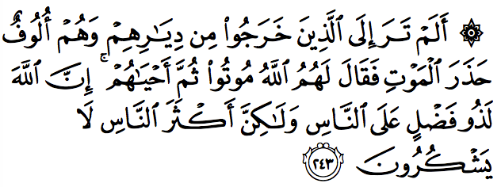
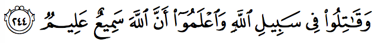
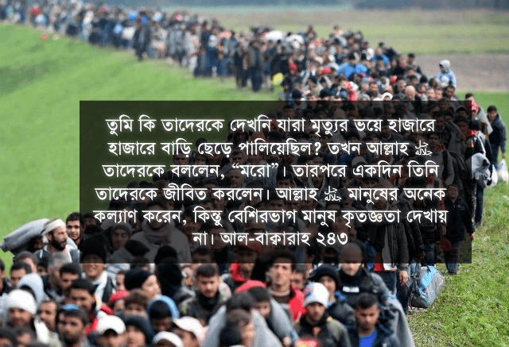

তুমি কি তাদেরকে দেখনি যারা মৃত্যুর ভয়ে হাজারে হাজারে বাড়ি ছেড়ে পালিয়েছিল? তখন আল্লাহ تعالى তাদেরকে বললেন, “মরো”। তারপরে একদিন তিনি তাদেরকে জীবিত করলেন। আল্লাহ تعالى মানুষের অনেক কল্যাণ করেন, কিন্তু বেশিরভাগ মানুষ কৃতজ্ঞতা দেখায় না। [আল-বাক্বারাহ ২৪৩]

আর আল্লাহর تعالى পথে যুদ্ধ (ক্বিতাল) করো। জেনে রেখো, আল্লাহ تعالى সব শুনছেন, সব জানেন। [আল-বাক্বারাহ ২৪৪]
এই আয়াতের প্রেক্ষাপট নিয়ে দুটো ঘটনার বর্ণনা রয়েছে। একটি ঘটনা হলো: একদল মানুষ একবার মহামারি আক্রান্ত হয়ে মৃত্যুর ভয়ে সেখান থেকে পালিয়ে গিয়েছিল। কিন্তু আল্লাহ تعالى তাদেরকে শাস্তি হিসেবে মৃত্যু দেন এটা শেখানোর জন্য যে, মানুষ কখনো মৃত্যু থেকে পালাতে পারবে না। যাদের জন্য মৃত্যু নির্দিষ্ট, সেদিন সে মারা যাবেই। মানুষের ক্ষমতা নেই তার জন্য নির্ধারিত মৃত্যু থেকে পালিয়ে যাওয়ার। [৬][৮][৯][১০][১২][১৪][১৭][১৮]
আরেকটি ঘটনা, যার সাথে কু’রআনের আয়াতগুলোর সাথে সঙ্গতি মেলে, তা হলো: বনু ইসরাইলদেরকে যখন তাদের প্রতি অন্যায়ের বিরুদ্ধে যুদ্ধ করতে আদেশ করা হয়েছিল নবীর মাধ্যমে, তখন হাজার খানেক মানুষ জানের ভয়ে যুদ্ধ করা থেকে পালিয়ে যায়। তাদেরকে আল্লাহ تعالى অবাধ্যতার শাস্তি হিসেবে মৃত্যু দেন। এভাবে তিনি মানুষকে শেখান যে, আল্লাহর تعالى পথে যুদ্ধ করা থেকে পালিয়ে গিয়ে কোনো লাভ নেই। যার মারা যাওয়ার কথা, সে মারা যাবেই। যার জন্য আল্লাহ تعالى হায়াত লিখে রেখেছেন, সে একটার পর একটা যুদ্ধে অংশ নিলেও মরবে না, জীবিত অবস্থায় ফিরে আসবেই। আর যার জন্য আল্লাহ تعالى মৃত্যু লিখে রেখেছেন, সে যুদ্ধ থেকে পালিয়ে গুহায় গিয়ে বসে থাকলেও মারা যাবেই। শুধুই পার্থক্য হলো, যুদ্ধে গেলে মৃত্যু হবে একটা বিরাট অর্জন, আর পালিয়ে গেলে মৃত্যু হবে অর্থহীন, অপমানকর এক সমাপ্তি।[১২][১৪][৪][৬][১৭][১৮][১৩]

জিহাদ এবং ক্বিতালের মধ্যে পার্থক্য
আজকে জিহাদ এবং ক্বিতাল শব্দদুটোর ব্যাপক অপব্যবহার করা হচ্ছে। একদল সংগঠন কু’রআনের আয়াতগুলোতে জিহাদ এবং ক্বিতালের মধ্যে পার্থক্য না করে, জিহাদের জায়গায় ক্বিতাল করার প্রচারণা চালাচ্ছে। আরেকদল সংগঠন ক্বিতালের আয়াতগুলোকে সাধারণ জিহাদ অনুবাদ করে স্পষ্ট প্রতিরোধ এবং যুদ্ধের জায়গায় চুপচাপ বসে অপেক্ষা করা এবং অন্যায়ের সাথে আপোষ করে চলার জন্য প্রচারণা করছে।
এই দুই পক্ষই দাবি করে যে, যেহেতু জিহাদ এবং ক্বিতাল সমার্থক শব্দ, তাই এই শব্দ দুটোকে একে অপরের জায়গায় বদল করা যায়। লক্ষ্য করলে দেখা যায় যে, এরা আয়াতগুলোতে জিহাদের জায়গায় ক্বিতাল এবং ক্বিতালের জায়গায় জিহাদ সুবিধামত বসিয়ে, তাদের ইচ্ছেমত অনুবাদ এবং ব্যাখ্যা করে, যেন তারা তাদের উদ্দেশ্য সফল করতে পারে। একারণে যখনই যুদ্ধ, সংগ্রাম, হত্যা ইত্যাদি সম্পর্কে কোনো আয়াত বা হাদিস পাবেন, প্রথমেই দেখে নেবেন আরবিতে শব্দটা কি জিহাদ নাকি ক্বিতাল।
কু’রআনে আল্লাহ تعالى অত্যন্ত সূক্ষ্ম আরবি ব্যবহার করেছেন। প্রতিটি শব্দ বেছে নেওয়া হয়েছে এমনভাবে যে, সেই শব্দ ছাড়া অন্য কোনো সমার্থক শব্দ ব্যবহার করলে, সেই আয়াতে অর্থ বিকৃত করা যাবে, মানুষ ভুল কাজ করে ফেলবে। জিহাদের আয়াতে ক্বিতালের অর্থ করলে সর্বনাশ হয়ে যাবে। ক্বিতালের আয়াতে জিহাদের অর্থ করলেও উদ্দেশ্য বাস্তবায়ন হবে না, শান্তি আসবে না, মুসলিমদের অবস্থার পরিবর্তন হবে না। আরবিতে শব্দের সংখ্যা বিশাল। বেশিরভাগ শব্দের অনেকগুলো অর্থ হয় এবং অনেকগুলো সমার্থক শব্দ রয়েছে। কিন্তু একটা ব্যাপার অত্যন্ত গুরুত্বপূর্ণ যে, আরবিতে দুটো শব্দের ঠিক একই অর্থ হয় না, যদিও কিনা তারা সমার্থক। সমার্থক শব্দগুলোর অর্থের মধ্যে অবশ্যই কোনো না কোনো পার্থক্য রয়েছে। দুটো শব্দ কখনো সব ক্ষেত্রে ঠিক একই অর্থ বহন করে না।[মুতারাদিফাতুল কু’রআন]
যেমন ধরুন ‘প্রতিরোধ’ এবং ‘বিরোধিতা’ সমার্থক শব্দ। কিন্তু তাই বলে কি আমরা যে কোনো বাক্যে প্রতিরোধ-এর জায়গায় বিরোধিতা ব্যবহার করতে পারি? যেমন, “আমি এই ব্যাপারে তোমার বিরোধিতা করবো।” — একে যদি কেউ লেখে, “আমি এই ব্যাপারে তোমাকে প্রতিরোধ করবো।” — তাহলে এই দুই বাক্যের অর্থ পাল্টে যাবে। প্রথমটায় শান্তিপূর্ণ, নিরস্ত্র বিরোধিতা করার সুযোগ থাকবে, দ্বিতীয়টি হবে বল প্রয়োগ করে প্রতিরোধ করা।
ঠিক একইভাবে যেই আয়াতে জিহাদ শব্দ এসেছে, সেই আয়াতকে যখন ক্বিতালের আয়াত বানিয়ে ফেলা হবে, তখন মুসলিমরা যেই প্রেক্ষাপটে মারামারি ছাড়াও অন্য পথ নেওয়ার সুযোগ ছিল, সেখানে মারামারি করাটাই একমাত্র পথ হিসেবে নেবে। তখন হঠাৎ করে কু’রআনে বহু আয়াত হয়ে যাবে শুধুই মারামারি, যুদ্ধ করার আয়াত, অন্য কোনো ধরনের প্রতিরোধ, প্রতিবাদ করার আয়াত নয়। অথচ দেখা যাবে, সেই আয়াতগুলোতে আল্লাহ تعالى আমাদেরকে জিহাদ শব্দ ব্যবহার করে বিভিন্ন পদ্ধতিতে বিরোধিতা, প্রতিরোধ, প্রতিরক্ষা করার আদেশ দিয়েছেন, যার অধিকাংশই হয়তো সশস্ত্র জিহাদ নয়।
জিহাদ
جهاد জিহাদ অর্থ কোনো কিছু অর্জনে অত্যন্ত চেষ্টা করা, নিজের ক্ষমতার যথাসাধ্য ব্যবহার করা, লক্ষ্য অর্জন করতে গিয়ে কষ্ট সহ্য করা। সেটা কোনো শত্রুর বিরুদ্ধে, বা শয়তানের বিরুদ্ধে অথবা নিজের কুপ্রবৃত্তির বিরুদ্ধে।[রাগিব] ‘জিহাদ ফি সাবিলিল্লাহ’ হচ্ছে আল্লাহকে تعالى খুশি করার জন্য জিহাদ করা, যার মধ্যে পড়ে[৩৮৫][৩৮৭] —
- আল্লাহর تعالى আইন যথাসাধ্য মেনে চলা, যতই কষ্ট হোক না কেন।
- কষ্ট করে হলেও ইসলামের দাওয়াত দেওয়া।
- ইসলাম নিয়ে পড়াশুনা করে আলিম হওয়ার জন্য কষ্ট করা।
- নিজের ইসলামের জ্ঞান ব্যবহার করে ইসলাম বিরোধীদের সাথে তর্ক করা, তাদের ভুল শোধরানোর জন্য।
- ইসলামের অপপ্রচারণার বিরুদ্ধে সঠিক প্রচারণা চালানো।
- নিজের জান-মালের নিরাপত্তা বজায় রাখতে সংগ্রাম করা।
- মুসলিম জাতি যদি যুদ্ধে জড়িয়ে পড়ে, তাহলে সেটাতে অংশ নেওয়া, কিছু শর্ত সাপেক্ষে। মুসলিমদের স্বাধীনতার জন্য সংগ্রাম করা।
জিহাদ ব্যাপক অর্থে ব্যবহার হয়। কু’রআনে ৩৫টি আয়াতে জিহাদ এসেছে, যার মধ্যে ৩১টি আয়াতেই সরাসরি সশস্ত্র সংগ্রামের কথা বলা হয়নি।
ক্বিতাল
الْقِتَالُ (ক্বিতা-ল) অর্থ ‘পরস্পরে যুদ্ধ করা’। বাবে মুফা‘আলাহর অন্যতম মাসদার। এই বাবের ক্রিয়াগুলোর অর্থ হচ্ছে একাধিক পক্ষের মধ্যে কিছু ঘটা। যেমন দুই পক্ষের মধ্যে যুদ্ধ। এক পক্ষ থেকে একতরফা আক্রমণ নয়। ক্বিতালের দ্বিতীয় অর্থ ‘প্রতিরোধ করা’। যেমন নামাজরত মুসল্লির সামনে দিয়ে হেঁটে যাওয়ার বিরুদ্ধে শাস্তিস্বরূপ হাদিসে বলা হয়েছে فَلْيُقَاتِلْهُ فَإِنَّهُ شَيْطَانٌ “তার উচিৎ ওকে ক্বিতাল করা (সজোরে রুখে দেয়া)। কেননা ওটা শয়তান।”[সূনান আন নাসাঈ ৪৮৬২]। ক্বিতা-ল অর্থ যদি শুধুই সশস্ত্র হামলা করা হতো, তাহলে আমরা নামাজে সামনে দিয়ে কেউ হেঁটে গেলে তাকে হত্যা করে ফেলতাম।
ক্বিতালের অর্থ সীমিত, জিহাদের মতো ব্যাপক নয়। সব ক্বিতাল জিহাদ, সব জিহাদ ক্বিতাল নয়। কু’রআনের যে সব আয়াতে ক্বিতাল বলা হয়েছে, সেগুলো সব জিহাদের অন্তর্ভুক্ত হলেও, সেগুলোর প্রত্যেকটির অর্থ প্রতিরোধ অথবা সশস্ত্র হামলা।[৩৯৩]
ক্বিতা-ল নাকি ক্বাতল?
যারা জিহাদ/ক্বিতাল নিয়ে ভুল পথে চলে গেছেন, তাদের মূল সমস্যা হচ্ছে ক্বাতল এবং ক্বিতা-ল এই শব্দ দুটোকে এক করে ফেলা। ক্বাতল অর্থ হত্যা, খুন, আক্রমণ করা। কিন্তু লম্বা ক্বিতা-ল অর্থ দুই পক্ষের মধ্যে যুদ্ধ। ক্বাতল হচ্ছে একতরফা হত্যাযজ্ঞ। ক্বিতা-ল হচ্ছে দুই পক্ষের মধ্যে।[৩৯১] ক্বিতা-ল-এর শর্ত হচ্ছে অপর পক্ষ যুদ্ধ করতে পারে এবং তারা হয় নিজেরাই আগে আক্রমণ করেছে বা তাদের বিরুদ্ধে খালিফা থেকে যুদ্ধ ঘোষণা করা হয়েছে।[৩৮৯] কেউ বা কোনো দল নিজে থেকে গিয়ে মারামারি, বোমাবাজি, হত্যা করলে সেটা ক্বিতা-ল হবে না, সেটা ক্বাতল হয়ে যাবে, যেটার শাস্তি ভয়াবহ — একজন নিরীহ মানুষকে ক্বাতল করলে সারা মানবজাতিকে ক্বাতল করার সমান পাপ।[আল-মায়িদাহ ৫:৩২]
ক্বিতাল-এর হাদিস নিয়ে ধোঁকাবাজি
ক্বিতাল নিয়ে একটি অত্যন্ত জনপ্রিয় হাদিস দক্ষ বক্তাদের প্রায়ই ব্যবহার করতে দেখা যায়। বাজারে প্রচলিত উস্কানিমূলক বইগুলোতে এই হাদিসটি থাকবেই—
“আমি মানুষের বিরুদ্ধে লড়াই করার জন্য আদিষ্ট হয়েছি যতক্ষণ না তারা বলে “লা ইলাহা ইল্লাল্লাহ” সুতরাং যে ব্যাক্তি “লা ইলাহা ইল্লাল্লাহ” এর সাক্ষ্য দিবে তাঁর জান ও মাল-সম্পদ আমার থেকে নিরাপদ। তবে ইসলামের কোনো হক্ ব্যাতীত। আর তাঁর অন্তরের হিসাব আল্লাহ তাআলার উপর ন্যস্ত।” (বুখারী, মুসলিম)
এই হাদিসটির ব্যাখ্যা তারা করবে যে, রাসুল عليه السلام বলছেন, তাকে পাঠানো হয়েছে সব অমুসলিমদের হত্যা করার জন্য, যতক্ষণ না তারা কালেমা পড়ে সবাই মুসলিম হয়ে না যাচ্ছে। তার মানে আমাদেরকেও সব অমুসলিমদের আক্রমণ করতে হবে, যতক্ষণ না তারা কালেমা পড়ে মুসলিম না হচ্ছে। ইসলামের দাওয়াত দেওয়ার পরেও মুসলিম না হলে তাদেরকে হত্যা করতে হবে।
হাদিসটির এই অনুবাদ এবং ব্যাখ্যা দুটোই ভুল, কারণ মূল আরবিতে ক্বিতা-ল ব্যবহার করা হয়েছে, ক্বাতল নয়। ক্বাতল বলা হলে রাসুল عليه السلام নিজে থেকে গিয়ে হত্যাযজ্ঞ চালাতে পারতেন। কিন্তু ক্বিতা-ল বলার কারণে সেটা দুই পক্ষের মধ্যে যুদ্ধ হয়ে যাবে। এছাড়াও এই হাদিসে যেই মানুষদের কথা বলা হয়েছে, তারা হচ্ছে বিশেষ আরব মুশরিক গোষ্ঠী, যারা যুদ্ধ করতে উদ্যত হয়েছিল। শুধুমাত্র তাদের বিরুদ্ধে যুদ্ধ করার জন্য রাসুলকে عليه السلام আদেশ করা হয়েছে।[৩৯১]
এই হাদিসটি পড়লে প্রথমেই যেই প্রশ্ন আশা উচিত, সেটা হচ্ছে النَّاسَ বা ‘সেই লোকরা’ কারা যাদের বিরুদ্ধে যুদ্ধ করতে বলা হয়েছে? এরা কি সব অমুসলিম? বিখ্যাত আলিমরা কী বলেছেন দেখি—
ইবন তাইমিয়্যাহ বলেন, “সেই সব লোকদের নির্দেশ করে, যারা যুদ্ধ শুরু করেছে, যাদের সাথে যুদ্ধ করতে আল্লাহ تعالى আমাদের অনুমতি দিয়েছেন। এটি তাদের নির্দেশ করে না, যাদের সাথে আমাদের চুক্তি আছে, যাদের সাথে চুক্তি মানতে আল্লাহ تعالى আমাদের বলেছেন।” [মাজমু’ আল-ফাতাওয়া ১৯/২০] সৌদি আরবের প্রাক্তন প্রধান মুফতি শাইখ ইবন বা’য এর ফাতয়া অনুসারে এরা হচ্ছে সেই সব লোক, যারা মুখে ইসলাম গ্রহণ করেছে বলে, কিন্তু কাজে তারা ইসলামের মূল ভিত্তিগুলো অনুসরণ করে না, অর্থাৎ নামাজ প্রতিষ্ঠা করে না, যাকাত আদায় করে না।[৩৪৬] ইবন হাজার আল-আস্কালানি তার সাহিহ বুখারির ব্যাখ্যায় ৫ বা ৬ ধরনের মানুষের কথা বলেছেন, যাদের সাথে যুদ্ধ করা যাবে। অর্থাৎ কাদের সাথে যুদ্ধ করা যাবে, সেটা সুনির্দিষ্ট, ঢালাও ভাবে কোনো দেশের সব অমুসলিমরা নয়।[৩৪৭]
এই হাদিস কোনোভাবেই আজকের যুগের অযোদ্ধা অমুলিমদের বেলায় প্রযোজ্য নয়। যারা সেটা করবে, তারা হয় আরবি ব্যাকরণ জানে না, না হয় কোনো প্রসিদ্ধ মুহাদ্দিসের ব্যাখ্যা পড়েনি। যদি এই হাদিসে আন-নাস বলতে ঢালাওভাবে সব অমুসলিম বোঝাত, তাহলে রাসুল عليه السلام নিজে বহু অমুলিমের বিরুদ্ধে যুদ্ধ করতেন, যারা তার প্রতিবেশী ছিল। অনেকে তার অধীনে জিযিয়া (অমুসলিমদের কর) দিয়ে বসবাস করতো, ‘লা ইলাহা ইল্লাল্লাহ’ বলেনি, নামাজও পড়েনি। তার মানে এই দাঁড়ায় যে, তিনি عليه السلام নিজেই তার নিজের কথা রাখেননি![৩৪৭]
রাসূলুল্লাহ عليه السلام কখনোই বিচারে মৃত্যুদণ্ডপ্রাপ্ত বা যুদ্ধরত ‘কাফির’ ছাড়া অন্যদেরকে হত্যা করেননি। তার রাষ্ট্রে অগণিত কাফির সকল নাগরিক অধিকার নিয়ে বসবাস করেছেন। তিনি কখনোই তাদের হত্যা করেননি বা হত্যার অনুমতি দেন নি। ঈমানের দাবিদার মুনাফিকগণকে তিনি চিনতেন। তাদেরকেও হত্যার অনুমতি তিনি দেননি। উপরন্তু তিনি অযোদ্ধা সাধারণ অমুসলিম নাগরিককে হত্যা কঠিনভাবে নিষেধ করেছেন।[৪০৩]
এরকম অনেক উদাহরণ আমরা দেখতে পাই, যেখানে কোনো হাদিসের বর্ণনা পড়লে মনে হবে আমাদের বলা হয়েছে ক, খ, গ করতে, অথচ সেই হাদিসের ব্যাখ্যা পড়লে দেখা যাবে আমাদেরকে আসলে চ, ছ, জ করতে হবে। একারণেই সরাসরি সাহিহ হাদিস গ্রন্থগুলো পড়ে যদি মনে করি আমরা রাসুলের عليه السلام নির্দেশ মানছি, তাহলে সেটা বিরাট বোকামি। যারা ইসলাম নিয়ে যথাযথ প্রাতিষ্ঠানিক শিক্ষা নিয়েছেন, তারা এই বোকামি করেন না। আমরা কু’রআনের মতো সবচেয়ে পরিষ্কার ভাষার বাণী যথাযথভাবে বোঝার জন্য তাফসীর পড়ি, অথচ হাদিস, যা রাসুলের বাণী মানুষের মুখে বর্ণনা করা, যার ভাষা আল্লাহর تعالى বাণীর ধারে কাছেও সূক্ষ্ম নয়, সেটার কোনো ধরনের ব্যাখ্যা না পড়েই ধরে নেই যে, রাসুল عليه السلام ঠিক কখন কোন প্রেক্ষিতে কী বলতে চেয়েছেন, কাদেরকে নিয়ে সেটা বলেছেন, কাদের ব্যাপারে সেটা বলেননি, তা আমি একদম সঠিকভাবে বুঝে গেছি। “কু’রআন বোঝার জন্য তাফসীর পড়তে হবে, হাদিস বোঝার জন্য হাদিসের শার্হ পড়ার দরকার নেই” —এই ভুল ধারণা থেকেই বেশিরভাগ চরমপন্থি, উগ্রপন্থী, তাকফিরি মুসলিম এবং চরমপন্থি সালাফির জন্ম।
ক্বিতা-ল-এর শর্ত
আল্লাহ تعالى কু’রআনে ক্বিতা-ল অর্থাৎ যুদ্ধ করতে আদেশ দিয়েছেন, ক্বাতল অর্থাৎ হত্যা, খুন করতে বলেননি। ক্বিতা-ল বা যুদ্ধ দুটো সামরিক বাহিনীর মধ্যে হয়, বা সশস্ত্র আক্রমণকারীর বিরুদ্ধে হয়, কোনো নিরীহ মুসলিম বা অমুসলিমের বিরুদ্ধে নয়। ক্বিতা-ল করতে হয় অনেকগুলো শর্ত মেনে চলে, যেমন নিরস্ত্র-নিরীহ বাসিন্দা, মহিলা, শিশু, বৃদ্ধ, ধর্ম যাজকদের আক্রমণ না করে, শত্রু পক্ষের পাঠানো প্রতিনিধিদের হত্যা না করে, উপাসনালয়, বাসস্থানের বাড়িঘর না ভেঙ্গে, গাছ, ফসল ধ্বংস না করে ইত্যাদি বহু শর্ত মেনে ক্বিতা-ল করতে হয়।[৩৮৬][৩৮৭] যারা এই শর্ত না মেনে বোমা মেরে বাড়িঘর ভেঙ্গে, গাছপালা নষ্ট করে, শিশু, নারী, বৃদ্ধদের হত্যা করে, ভিন্ন ধর্মের পুরোহিতদের খুন করে ‘ক্বিতা-ল ফি সাবিলিল্লাহ’ করছে বলে মনে করছে, তারা আসলে ক্বিতা-ল করছে না, শুধুই ক্বাতল বা খুনাখুনি করছে। এরা ইসলামের আইনেই বড় ধরনের অপরাধী। মুজাহিদ হওয়া তো বহু দূরের কথা।
কেউ যদি কাফিরদের বিরুদ্ধে ক্বিতা-ল অর্থাৎ সশস্ত্র প্রতিরোধ বা যুদ্ধ করতে যায়, তাহলে সে শুধুমাত্র নীচের প্রেক্ষাপটগুলোতে তা করতে বাধ্য[৩৮৭]—
১) যখন কোনো মুসলিম নিজে যুদ্ধের মধ্যে জড়িয়ে পড়েছে বা তার জান, মালের উপর আক্রমণ হয়েছে।
২) যখন কোনো শত্রু পক্ষ এসে মুসলিম এলাকায় আক্রমণ করেছে।
৩) যখন শাসক যুদ্ধ করার আদেশ দিয়েছেন।
৪) যুদ্ধের সময় তাকে এমন একটা কাজে প্রয়োজন, যা সে ছাড়া অন্য কেউ করতে পারে না।
এই প্রেক্ষাপটগুলোতে একজন মুসলিমদের জন্য ক্বিতা-ল-এ অংশ নেওয়া ফরজ আইন হয়ে যায়। এগুলো ছাড়া অন্য প্রেক্ষাপট অনুসারে ক্বিতা-ল হয় ফরজে কিফায়া (সম্মিলিত দায়িত্ব, যথেষ্ট মানুষ পালন করলে আর তা সবার জন্য ফরজ নয়, যেমন জাযাজার নামাজ), না হয় তা মুবাহ, না হয় তা হারাম। যেমন, বাবা-মা উভয়ে যদি ক্বিতালে অংশ নিতে সম্মতি না দেয়, এবং তা ফরজে আইন না হয়, তাহলে সেই ক্বিতালে অংশ নেওয়া হারাম।[বই: আল-জিহাদ ওয়াল -ক্বিতাল আসসিয়াসা আশশারিয়াহ]
অন্যায়কারী শাসককে হামলা করা যাবে কি?
কোনো দল যদি দেশের ভেতরে হামলা করে এই উদ্দেশ্যে যে, হামলার ফলে দেশের সরকার চাপ অনুভব করে অন্যায়, দুর্নীতি করা কমিয়ে দেবে, তাহলে সেই ক্বিতা-ল অবৈধ, কারণ সরকারের দুর্নীতি, অন্যায় বন্ধ করার জন্য ইসলামে অন্য ব্যবস্থা দেওয়া আছে।[আল-জিহাদ ওয়াল -ক্বিতাল আসসিয়াসা আশশারিয়াহ পৃ ১৬৯৪]
তবে আলেমদের এই ব্যাপারে একমত আছে যে, যদি কোনো শাসকের বিরুদ্ধে ক্বিতা-ল করার ফলে মুসলিমদের ঐক্যের মধ্যে ফাটল ধরে, ব্যাপক রক্তপাতের সম্ভাবনা থাকে, তবে সেই শাসকের আদেশ মেনে চলতে আমরা বাধ্য, যদি না সে আমাদেরকে শারিয়াহর বিরুদ্ধে কিছু করতে বাধ্য না করে।[৩৮৮]
একাধিক দল যদি ক্ষমতায় যাওয়ার জন্য এবং খিলাফাতের নেতৃত্ব দেওয়ার জন্য একে অন্যের উপর অস্ত্র প্রয়োগ করে, তাহলে সেই ক্বিতা-ল সম্পূর্ণ অবৈধ, কারণ কোনো মুসলিম ভাইয়ের বিরুদ্ধে অস্ত্র ধরা হারাম। [আল-জিহাদ ওয়াল -ক্বিতাল আসসিয়াসা আশশারিয়াহ পৃ ১৬৯৭]
অন্যায়ের বিরুদ্ধে ক্বিতা-ল করা হারাম হয়ে যাবে, যদি সেই ক্বিতা-ল-এর ফলে যারা অন্যায় করছে না, তাদেরও ক্ষতি হয়।[পৃ ৯৫] কাফির শাসককে কোনো মুনকার অর্থাৎ অন্যায় করা থেকে বিরত রাখার জন্য হামলা করা হারাম, যদি তাতে ব্যাপক রক্তপাতের সম্ভাবনা থাকে।[পৃ ৯৭]
কাফির বা তাগুত শক্তি, সরকারের বিরুদ্ধে ক্বিতা-ল
কোনো দেশের সরকার যদি প্রকাশ্য কুফরিতে লিপ্ত থাকে, তাহলে তার বিরুদ্ধে ক্বিতা-ল করা যাবে কিনা এনিয়ে আলেমদের মধ্যে ব্যাপক মতভেদ আছে। মতভেদের মূল কারণ হচ্ছে, প্রকাশ্য কুফরিতে লিপ্ত খলিফার বিরুদ্ধে ক্বিতা-ল করার যত দলিল রয়েছে, যা আক্রমনাত্নক ইসলামি দলগুলো ব্যবহার করে সরকারের বিরুদ্ধে তাদের হামলাগুলোকে বৈধ দেখানোর জন্য, সেগুলো সবই একজন খলিফার বেলায় প্রযোজ্য। কিন্তু একটি গণতান্ত্রিক সরকার ব্যবস্থা খালিফা নয়। গণপ্রজাতন্ত্রী সরকারের প্রেসিডেন্ট ইসলামে খালিফার সংজ্ঞা অনুসারে খালিফা নন। প্রধানমন্ত্রীও নন। আগেকার যুগে রাজ্যের রাজাদেরকে খালিফা বলা গেলেও যেত, কিন্তু আজকের যুগে একটি সরকার ব্যবস্থা খালিফা নয়। ইসলামে খালিফা একজন মানুষ, একটি ব্যবস্থা নয়। খালিফা নিয়োগের যে ব্যবস্থাগুলো রয়েছে, সেই ব্যবস্থায় সরকার নিয়োগ হয় না। খালিফার যে ধরনের ক্ষমতা রয়েছে, সরকারের সেই ক্ষমতা নেই। খালিফার সিদ্ধান্তই শেষ সিদ্ধান্ত, কিন্তু সরকারের সিদ্ধান্তকে আদালত পরিবর্তন করতে পারে। তাই কাফির বা তাগুত খালিফার বিরুদ্ধে ব্যবস্থা নেওয়ার যত দলিল রয়েছে, সেগুলো আজকে আর প্রযোজ্য নয়, কারণ আজকের জটিল সরকার ব্যবস্থা খালিফা নয় —এটা বহু আলেমদের মত।
যেমন, আগে কেউ যদি বল প্রয়োগ করে আগের খালিফাকে অপসারণ বা হত্যা করতো, তাহলে সে একজন খালিফা হয়ে যেত এবং তার প্রতি বায়াহ বা আনুগত্য দিতে মুসলিমরা বাধ্য ছিল।[৩৯৪] এটা শত বছর আগে পর্যন্তও চলতো, আজকে চলে না। কারণ শত বছর আগেও রাজা-বাদশাহ’রা রাজ্য চালাত। আজকে নির্দিষ্ট সীমার মধ্যে রাষ্ট্র রয়েছে, যার সরকার জনগণের মাধ্যমে নির্বাচিত। আজকে কেউ তার দলবল নিয়ে হামলা করে কোনো দেশের প্রেসিডেন্টকে হত্যা করলে, সারা দেশ সেই দলের কাছে আত্মসমর্পণ করে না, যেটা আগে রাজাদের বেলায় ঘটতো। বরং ভাইস প্রেসিডেন্ট তখন প্রেসিডেন্ট হয়ে সেনাবাহিনী নিয়ে ঝাঁপিয়ে পড়ে। যদি কেউ প্রেসিডেন্ট, ভাইস প্রেসিডেন্ট, প্রধানমন্ত্রীকেও হত্যা করে, তাহলেও লাভ নেই। ক্ষমতাসীন দল সেদিনই জরুরি সমাবেশ ডেকে নিয়ম অনুসারে নতুন একজন প্রধানমন্ত্রী নিয়োগ করবে, তারপর সেনাবাহিনী, নৌবাহিনী, সীমান্ত প্রতিরক্ষা বাহিনী, পুলিশ বাহিনী নিয়ে একযোগে আক্রমণ করবে। শুধু তাই না, ইউনাইটেড নেশনের প্রতিরক্ষা বাহিনী এবং অন্যান্য সদস্য দেশগুলো যারা শান্তি রক্ষা অঙ্গীকার চুক্তি করেছে, তারা সবাই তাদের বাহিনী পাঠিয়ে দেবে সেই হামলাকারী দলকে নির্মূল করতে। তখন যুদ্ধ শুধু আর সেই দেশের তাগুত সরকারের বিরুদ্ধে হবে না, যুদ্ধ হয়ে যাবে সারা পৃথিবীর সব তাগুত শক্তির বিরুদ্ধে। শেষ পর্যন্ত কিছু অর্জন হোক বা না হোক, এই যুদ্ধে লক্ষ কোটি নিরীহ মুসলিম মারা যাবে।
এই ধরনের হামলা আগে কোনোদিন সফল হয়নি, ভবিষ্যতেও হওয়ার কারণ নেই। তার কারণ এই ধরনের হামলা ইসলাম সম্মত নয়। যারা স্বপ্ন দেখছেন যে, একদল মুসলিম কোনো একটা দেশে আক্রমণ করে সরকারের কিছু নেতাকে হত্যা করতে পারলে, সেই দেশের সেনা, নৌ, বিমান, পুলিশ, সীমানা প্রতিরক্ষা বাহিনী, ইউনাইটেড নেশন, প্রতিবেশী দেশগুলো সবাই সেই মুসলিম দলের শাসন মেনে নেবে, তাদেরকে আল্লাহ تعالى গভীরভাবে চিন্তা করার ক্ষমতা দিন। যতক্ষণ পর্যন্ত দেশের সংখ্যাগরিষ্ঠ জনগণ ভোট দিয়ে কোনো ইসলামি দলকে নির্বাচিত না করছে, ততক্ষণ পর্যন্তও ব্যাপক রক্তপাত ছাড়া কিছু অর্জন হওয়ার সম্ভাবনা নেই। এটা ১৩০০ বছর আগেও হয়নি, এখনো হওয়ার সম্ভাবনা নেই—
হাসান আল বসরি (মৃত্যু ১১০হি) প্রথম ইসলামি শতাব্দীর অন্যতম আলেম। ইবন সা’দ বলেন[৩৯৫]—
“একদল মুসলিম আল-হাসান আল-বসরি কাছে এসে আল-হাজ্জাজের বিরুদ্ধে বিদ্রোহ করার জন্য তার মতামত জানতে চাইলো। তারা বলল, ‘হে আবু সাইদ, অত্যাচারী শাসকের বিরুদ্ধে লড়াই করার ব্যাপারে তোমার মত কী, যে কিনা অন্যায়ভাবে রক্তপাত করেছে, অন্যায়ভাবে সম্পদ দখল করেছে, এটা করেছে, সেটা করেছে..’. তখন আল-হাসান বললেন, ‘আমার মত হচ্ছে যে, তার বিরুদ্ধে লড়াই হবে না। যদি এই অবস্থা আল্লাহর تعالى পক্ষ থেকে একটা শাস্তি হয়, তাহলে তোমরা তোমাদের তলোয়ার দিয়ে তা দূর করতে পারবে না। আর যদি এটা আল্লাহর تعالى পক্ষ থেকে একটা পরীক্ষা হয়, তাহলে সবর করো, যতক্ষণ না আল্লাহ تعالى সিদ্ধান্ত আসছে, কারণ তিনি সবচেয়ে বড় বিচারক।’ — তখন তারা আল-হাসানের কাছ থেকে চলে গেল এবং তার সাথে অমত করলো। তারপর তারা আল-হাজ্জাজের সাথে বিদ্রোহ করলো। আল-হাজ্জাজ তাদের সবাইকে হত্যা করলো। তারপর থেকে আল-হাসান বলতেন, ‘যদি মানুষ ধৈর্য ধরে, যখন কিনা তাদেরকে পরীক্ষা করা হচ্ছে অন্যায়কারী শাসক দিয়ে, তাহলে আল্লাহর تعالى পক্ষ থেকে দেওয়া সমাধান বেশি দূরে নয়। কিন্তু তারা সবসময় তলোয়ার নিয়ে ঝাঁপিয়ে পড়তে যায়, তাই তারা শেষ পর্যন্ত তলোয়ারের পাশেই পড়ে থাকে। আল্লাহর تعالى কসম! একটা বারও তারা ভালো কিছু করতে পারেনি!’”
আজকের পরিস্থিতিতে কী করতে হবে, তা রাসুল عليه السلام পরিষ্কার দিকনির্দেশনা দিয়ে গেছেন[৩৯৫]—
তিনি عليه السلام বললেন, “আমার পরে এমন সব নেতার উদ্ভব হবে, যারা আমার হেদায়েতে হেদায়েতপ্রাপ্ত হবে না এবং সুন্নাতও তারা অবলম্বন করবে না। তাদের মধ্যে এমন সব লোকের উদ্ভব হবে, যাদের অন্তঃকরণ হবে মানব দেহে শয়তানের অন্তঃকরণ।” রাবী বলেন, “তখন আমি বললাম, তখন আমরা কি করবো ইয়া রাসুলুল্লাহ! যদি আমরা সে পরিস্থিতির সম্মুর্খীন হই?” রাসূল عليه السلام বললেন, “তুমি শুনবে এবং মানবে যদি তোমার পিঠে বেত্রাঘাত করা হয় বা তোমার ধন-সস্পদ কেড়েও নেয়া হয়, তবুও তুমি শুনবে এবং মানবে।” [সাহিহ মুসলিম, কিতাবুল ইমারাহ ৪৬৩২]
এরপরেও যারা ক্বিতাল-এর নাম হারাম হামলা করছেন, তাদের হয় সৎ উদ্দেশ্য নেই, না হলে তাদের ইসলামের জ্ঞান একেবারেই নগণ্য, না হলে ক্রোধের কারণে তাদের বিবেকবুদ্ধি লোপ পেয়েছে।
অন্য দেশে গিয়ে হামলা চালানো
কোনো মুসলিমের পক্ষে অন্য কোনো দেশের মুসলিম বা অমুসলিমদেরকে আক্রমণ করা সম্পূর্ণ হারাম ‘আক্দ আল আমান’ বা ‘নিরাপত্তার চুক্তি’ কারণে।[৩৮৯] যখন কোনো মুসলিম আমেরিকা বা ফ্রান্সে যায় ভিসা বা সিটিজেনশিপ নিয়ে, তখন সে সেই দেশে প্রবেশ করে চুক্তির মাধ্যমে, ‘আক্দ আল আমান’ এর মাধ্যমে। এই চুক্তি অনুসারে সে সেখানে গিয়ে কোনো ধরনের হামলা করতে পারবে না।[৩৯০] যদি কোনো মুসলিম গোপন হামলার উদ্দেশ্য নিয়ে কোনো দেশে যায়, তাহলে প্রথমত সে মিথ্যা ভিসা চুক্তিতে স্বাক্ষর করেছে, ইমিগ্রেশনে মিথ্যা সাক্ষী দিয়েছে, একাধিক মানুষকে মিথ্যা বলেছে এবং ‘আক্দ আল আমান’ এর বিশ্বাসঘাতকতা করেছে। মিথ্যা বলে কোনো ইবাদত পালন করলে সেই ইবাদতটা পুরোটাই হারাম ইবাদত হয়ে যায়। এধরনের কাজ পবিত্র জিহাদ বা ক্বিতাল হওয়া তো দূরের কথা, বরং বিশ্বাসঘাতকতা করে সমগ্র মানবজাতিকে খুন করার মতো ভয়ঙ্কর অপরাধ।
যুদ্ধ মানেই ধোঁকা
হাদিসে আছে, “যুদ্ধ মানেই ধোঁকা” “الحرب خُدعة”— উগ্রপন্থিদের পছন্দের হাদিস। خُدعة হচ্ছে কৌশলে ধোঁকা, এর অর্থ বিশ্বাসঘাতকতা, আস্থা ভঙ্গ নয়। রাসুল عليه السلام যুদ্ধের সময় যে ধরনের ধোঁকা দিতে অনুমতি দিয়েছেন, তা হলো রাতের বেলা গোপনে শত্রুপক্ষকে আক্রমণের প্রস্তুতি নেওয়ার আগে গিয়ে আক্রমণ করা, যুদ্ধের সময় সৈন্য নিয়ে বের হওয়ার সময় কাউকে আগে থেকে না জানিয়ে বের হয়ে যাওয়া, বা আচমকা শত্রু পক্ষকে আক্রমণ করা। এই সবই হলো যুদ্ধ করতে উদ্যত শত্রু পক্ষের সৈন্যকে ধোঁকা দিয়ে আক্রমণ করা। নিরীহ জনতাকে আক্রমণ করা নয়। কিন্তু কোনো ক্ষেত্রেই বিশ্বাসঘাতকতা, কথা দিয়ে কথা না রাখা, চুক্তি ভঙ্গা করা বৈধ নয়, এমনকি যুদ্ধের সময়ও নয়। যুদ্ধের সময়ও যে কথা দিয়ে কথা না রাখা অবৈধ, তা নিয়ে যথেষ্ট দলিল আছে[৩৯২]—
আন-নওয়য়ি বলেছেন, “আলিমরা একমত হয়েছেন যে, যুদ্ধের সময় কুফফারদের যেকোনোভাবে ধোঁকা দেওয়া যাবে, শুধুমাত্র একটি ক্ষেত্রে ছাড়া— যদি তা চুক্তি ভঙ্গ হয়, অথবা আস্থা ভঙ্গ করা হয়।”
উমর ইবন আল-খাত্তাব একজন সেনা প্রধানকে চিঠি লিখেছিলেন, “আমি শুনলাম তোমাদের মধ্যে কিছু লোক কাফিরদের খুঁজে বের করে, তারপর যখন কাফিররা দুর্গম পাহাড়ে লুকায়, তখন তারা বলে, ‘ভয় পেয়ো না।’ তারপর যখন তারা কাফিরদের ধরতে পারে, তখন তাদেরকে হত্যা করে। খবরদার! যার হাতে আমার প্রাণ, তাঁর শপথ! আমি যদি শুনি কেউ এরকম করেছে, তাহলে আমি তার মাথা কেটে ফেলবো!”
আবু মুসলিমাহ থেকে বর্ণিত আছে, উমর ইবন খাত্তাব বলেছেন, “যার হাতে আমার প্রাণ, তাঁর শপথ! যদি তোমাদের কেউ কোনো মুশরিককে আস্থা দেওয়ার জন্য আকাশে ইঙ্গিত করো (তাকে আঘাত করা হবে না), তারপর মুশরিক কাছে আসার পর তাকে হত্যা করো, তাহলে আমি তাকে সেজন্য হত্যা করবো!”
যুদ্ধে কৌশল করে ধোঁকা দেওয়ার সম্মতি আছে, কিন্তু চুক্তি ভঙ্গ, শত্রু পক্ষের সাথে বিশ্বাসঘাতকতা সম্পূর্ণ নিষিদ্ধ। উপরের বর্ণনাগুলো পরিষ্কার প্রমাণ যে, শত্রুকে মিথ্যা বলে, তার আস্থা নিয়ে, তারপর তার ক্ষতি করাটা মৃত্যুদণ্ড পাওয়ার যোগ্য অপরাধ। আজকে যদি উমর ইবন খাত্তাব (রা) এর মতো একজন খালিফা থাকতেন, তাহলে যারা চোরাগুপ্তা হামলা করে, তাদের মাথা কেটে ফেলতেন।
তাহলে কি বসে বসে আঙ্গুল চুষবো?
সিরিয়া, গাজা, কাশ্মীরে মুসলিমদের মেরে শেষ করে ফেলা হচ্ছে। হাজার হাজার মুসলিমাহ ধর্ষিত হচ্ছেন। নিষ্পাপ শিশুদের রক্তে রাস্তা ভেসে যাচ্ছে। মুসলিম ভাইদের ধরে নিয়ে জেলে রেখে পাশবিক নির্যাতন করা হচ্ছে। লক্ষ মুসলিম পরিবার উদ্বাস্তু হয়ে রাস্তায় অমানবিক জীবনযাপন করছে। —এই সব দেখার পর যখন রক্ত গরম মুসলিম তরুণ-যুবকরা কাউকে দেখে জিহাদ, ক্বিতাল-এর বিরুদ্ধে কিছু বলতে, স্বাভাবিকভাবেই তারা ক্ষেপে যায়। তারা ভাবে: চোখের সামনে এত অন্যায় দেখে, তারপরেও জিহাদ না করে থাকার কথা যে বলে, সে কি মানুষ হতে পারে? কেন আমরা যে যেভাবে পারি, মুসলিমদের হত্যার প্রতিশোধ নেবো না? তাদের কেউ আবার বলে: কেন আমরা বোমা মেরে হোটেল, এম্বেসী উড়িয়ে দিয়ে কিছুটা হলেও কুফফারদের শাস্তি দেবো না?
আমরা সবাই চাই আমাদের অত্যাচারিত, অসহায় মুসলিম ভাইবোনদের জন্য কিছু করতে। গাজায় ২০১৪ সালে ৫৫১ জন শিশুর মৃত্যু দেখে আমাদের দুঃখে, কষ্টে চোখে পানি চলে এসেছিল।[৩৯৭] তরুণরা জিহাদের জন্য এক পায়ে দাঁড়িয়ে গিয়েছিল। অথচ ২০১২-২০১৫ সালে বাংলাদেশে ৯৬৮টি শিশুকে নির্মম নির্যাতন করে মেরে ফেলা হয়েছে।[৩৯৮] ধর্ষণ ও যৌন হয়রানির শিকার হয়েছে ১,৭৪৮ শিশু।[৩৯৯] —সেই তরুণদের এসব নিয়ে কেন যেন বিশেষ মাথা ব্যাথা নেই।
কাশ্মীরের জনতার উপর ভারতীয় বাহিনীর নির্যাতন দেখে আমাদের কষ্টে বুক ভেঙে যাচ্ছে। গত সাত বছরে সেখানে আমাদের বোনদের ১১৩৬টি সম্ভ্রমহানীর ঘটনা পড়ে আমাদের রক্তে আগুন ধরে যায়। তরুণরা কাশ্মীরে জিহাদের জন্য যেতে এক পায়ে রাজি। অথচ বাংলাদেশে এক বছরেই এরচেয়ে বেশি ধর্ষণ হয়। নির্যাতিত হয় তার দশগুণ বেশি।[৪০২] শুধু ২০১১ সালেই ধর্ষণ এবং নির্যাতনের কারণে আত্মহত্যা করেছে ৪০০ জন শিশু এবং নারী। — নিজের দেশের হাজার হাজার মুসলিমাহর চোখের পানি সেই তরুণদের কেন যেন বিচলিত করে না।
আমাদের নিজের দেশে গাজার থেকে বেশি শিশু হত্যা হয় —ধর্ষণ করে, না হলে পিটিয়ে মেরে ফেলে। নিজের দেশে কাশ্মীরের থেকে বেশি বোনদের ধর্ষণ করা হয়। নিজের দেশে প্রত্যেক বছর শত শত মুসলিম ভাই গুম এবং খুন হয়। সিরিয়া তো দূরের কথা, নিজের দেশেই পাঁচ লক্ষ উদ্বাস্তু, লক্ষ ভাসমান মানুষ রয়েছে।[৪০০][৪০১] — নিজের দেশের হাজার হাজার ধর্ষিত বোন, নির্যাতিত শিশু, ভাইয়েরা আমাদের দিকে তাকিয়ে সাহায্যের জন্য চিৎকার করে মরে গেছে। কিন্তু ওদের দিকে না তাকিয়ে আমরা ব্যস্ত ছিলাম সিরিয়া, গাজা, কাশ্মীর গিয়ে জিহাদের রঙিন স্বপ্নে।
নিজের দেশে ঘটে যাওয়া এত সব অন্যায়ের বিরুদ্ধে আমরা যথাযথ পদ্ধতিতে আন্দোলন করতে পারি, এটা জিহাদ। মানুষের মধ্যে ইসলামের প্রচার করে মানুষকে পশু থেকে মানুষের পর্যায়ে তুলে আনার চেষ্টা করতে পারি, এটাও জিহাদ। অন্যায়ের বিরুদ্ধে সামাজিক প্রতিরোধ গড়ে তুলতে পারি। অপসংস্কৃতির প্রচার বন্ধে কত কিছু করতে পারি। অন্যায়কারীর উচিত শাস্তির ব্যবস্থা করতে পারি, যেন অন্যরা আর একই অন্যায় করার সাহস দেখাতে না পারে। —এরকম শত শত ইসলাম সম্মত উপায়ে দেশের আইন মেনে চলেও অন্যায়ের বিরুদ্ধে সংগ্রাম করে জিহাদ করতে পারি। সমাজে চলে আসা প্রচলিত এইসব অপরাধগুলোর বিরুদ্ধে জিহাদ প্রত্যেক নবী, রাসুল করে গেছেন। কেউ বসে ছিলেন না, কবে যুদ্ধ করার সুযোগ আসবে, এই আশায়। নবী-রাসুলরা প্রথমে ছিলেন সমাজ সংস্কারক, তারপরে হয়েছিলেন ধর্ম প্রচারক।
এই সব জিহাদে বরং কোনো জঙ্গি সংগঠন, ইসলামি দল বা রাজনৈতিক দলের কূটনৈতিক কৌশলের শিকার হয়ে, নিরীহ মানুষ মেরে ফেলে, সারা মানবজাতিকে হত্যা করার পাপ ঘাড়ে নেওয়ার সম্ভাবনা নেই। আর এই সব অন্যায়ের বিরুদ্ধে কাজ করতে গিয়ে যদি মরেও যাই, সেটা হবে শহীদের মৃত্যু।[৪০৪] এই মৃত্যুতে বাবা-মায়ের মুখ কালো হবে না, পুলিশ এসে ভাইবোনদের ধরে নিয়ে যাবে না, হলুদ মিডিয়া খারাপ কিছু লিখতে পারবে না। সারা দেশের মানুষ গর্ব করবে এমন একজন সত্যিকারের ভালো মানুষের জন্য, একজন মুসলিমের জন্য।
সূত্র:
[১] বাইয়িনাহ এর কু’রআনের তাফসীর। [২] ম্যাসেজ অফ দা কু’রআন — মুহাম্মাদ আসাদ। [৩] তাফহিমুল কু’রআন — মাওলানা মাওদুদি। [৪] মা’রিফুল কু’রআন — মুফতি শাফি উসমানী। [৫] মুহাম্মাদ মোহার আলি — A Word for Word Meaning of The Quran [৬] সৈয়দ কুতব — In the Shade of the Quran [৭] তাদাব্বুরে কু’রআন – আমিন আহসান ইসলাহি। [৮] তাফসিরে তাওযীহুল কু’রআন — মুফতি তাক্বি উসমানী। [৯] বায়ান আল কু’রআন — ড: ইসরার আহমেদ। [১০] তাফসীর উল কু’রআন — মাওলানা আব্দুল মাজিদ দারিয়াবাদি [১১] কু’রআন তাফসীর — আব্দুর রাহিম আস-সারানবি [১২] আত-তাবারি-এর তাফসীরের অনুবাদ। [১৩] তাফসির ইবন আব্বাস। [১৪] তাফসির আল কুরতুবি। [১৫] তাফসির আল জালালাইন। [১৬] লুঘাতুল কুরআন — গুলাম আহমেদ পারভেজ। [১৭] তাফসীর আহসানুল বায়ান — ইসলামিক সেন্টার, আল-মাজমাআহ, সউদি আরব [১৮] কু’রআনুল কারীম – বাংলা অনুবাদ ও সংক্ষিপ্ত তাফসীর — বাদশাহ ফাহাদ কু’রআন মুদ্রণ কমপ্লেক্স
[২৯৩] Islamqa.info, (2015). Will a Muslim who is killed wrongfully or treacherously or as a result of his house collapsing on him be a martyr? – islamqa.info. [online] Available at: http://islamqa.info/en/129214 [Accessed 14 May 2015].
[২৯৪] Onislam.net, (2015). Jihad Against Local Injustice and Corruption. https://web.archive.org/web/20150728010022/http://www.onislam.net/english/shariah/contemporary-issues/interviews-reviews-and-events/412138-jihad-against-local-injustice-and-corruption.html
[২৯৫] Onislam.net, (2015). Jihad Between Defense and Attack. [online] Available at: https://web.archive.org/web/20150930084011/http://www.onislam.net/english/shariah/contemporary-issues/interviews-reviews-and-events/412141-al-qaradawis-fiqh-of-jihad-book-review-411.html
[৩৪৬] Alifta.net (2016). Fatwas of Ibn Baz . Retrieved 11 January 2016, from http://www.alifta.net/fatawa/fatawaDetails.aspx?languagename=en&View=Page&PageID=4910&PageNo=1&BookID=14
[৩৪৭] 40hadithnawawi.com (2016). “Hadith 8 – The Sanctity of a Muslim” Retrieved 11 January 2016, from http://40hadithnawawi.com/index.php/the-hadiths/hadith-8
[৩৮৫] Akhtar Khan, Zamir। “CONCEPT OF JIHAD IN ISLAM (An Analytical Study in the Light of the Quran and the Sunnah of the Prophet)” http://www.qurtuba.edu.pk/thedialogue/The%20Dialogue/3_2/02_Zamir_Akhtar.pdf
[৩৮৬] International, M. (2016). Jihad: Perception & Reality. Minahj-ul-Quran International. Retrieved 6 August 2016, from http://www.minhaj.org/english/tid/13819/Jihad-PerceptionReality.html
[৩৮৭] Ruling on jihad and kinds of jihad – islamqa.info. (2016). Islamqa.info. Retrieved 6 August 2016, from https://islamqa.info/en/20214
[৩৮৮] Were the Ottomans caliphs like the ‘Abbasids and Umayyads? – islamqa.info. (2016). Islamqa.info. Retrieved 6 August 2016, from https://islamqa.info/en/227620
[৩৮৯] Rules of engagement in jihad | The Humble “I”. (2016). Thehumblei.com. Retrieved 6 August 2016, from https://thehumblei.com/tag/rules-of-engagement-in-jihad/
[৩৯০] Jihad, Abrogation in the Quran & the “Verse of the Sword” – SeekersHub Answers. (2010). SeekersHub Answers. Retrieved 6 August 2016, from http://seekershub.org/ans-blog/2010/11/06/jihad-abrogation-in-the-quran-the-verse-of-the-sword/
[৩৯১] Understanding the Hadith, “I Was Ordered to Fight the People Until They Testify…” – IslamQA. (2012). IslamQA. Retrieved 6 August 2016, from http://islamqa.org/hanafi/seekersguidance-hanafi/32815
[৩৯২] Deception in war – islamqa.info. (2016). Islamqa.info. Retrieved 7 August 2016, from https://islamqa.info/en/10138
[৩৯৩] Sharif, Mohd Farid bin Mohd. “Concept of jihād and baghy in Islamic law: with special reference to Ibn Taymiyya.” (2006).
[৩৯৪] How the caliph of the Muslims is appointed – islamqa.info. (2016). Islamqa.info. Retrieved 8 August 2016, from https://islamqa.info/en/111836
[৩৯৫] The Tyranny Of The Rulers, A Reason For Rebellion?. (2013). Abu Khadeejah. Retrieved 8 August 2016, from http://www.webcitation.org/6jbrUKxo1
[৩৯৬] ইসলামের দৃষ্টিতে জিহাদ. Islam.net.bd. Retrieved 8 August 2016, from http://www.webcitation.org/6jbrPrDzU
[৩৯৭] Key figures on the 2014 hostilities | GAZA One Year On. (2016). Gaza.ochaopt.org. Retrieved 10 August 2016, from http://gaza.ochaopt.org/2015/06/key-figures-on-the-2014-hostilities/
[৩৯৮] সাড়ে তিন বছরে ৯৬৮ শিশুহত্যা. (2016). প্রথম আলো. Retrieved 10 August 2016, from http://www.webcitation.org/6jf40tgB8
[৩৯৯] ভয়ংকর অপরাধ বাড়ছেই. (2016). Jugantor.com. Retrieved 10 August 2016, from http://www.webcitation.org/6jf7PXYyO
[৪০০] বাংলাদেশে আর থাকতে চায় না অনেক রোহিঙ্গা উদ্বাস্তু – BBC বাংলা. (2016). BBC বাংলা. Retrieved 10 August 2016, from http://www.bbc.com/bengali/news/2016/02/160218_bd_rohingya_myanmar
[৪০১] রাজধানীতে বাড়ছে ভাসমান মানুষ ॥ বাড়ছে অপরাধ . (2016). The Daily Sangram. Retrieved 10 August 2016, from http://www.webcitation.org/6jf5yLsiB
[৪০২] Rape, rape-murder rising | Dhaka Tribune. (2016). Archive.dhakatribune.com. Retrieved 10 August 2016, from http://www.webcitation.org/6jf80y1hE
[৪০৩] ইসলামের ইতিহাসে সন্ত্রাস-জঙ্গিবাদ: একটি পর্যালোচনা —ড. খোন্দকার আব্দুল্লাহ জাহাঙ্গীর। http://www.webcitation.org/6jf9YCi2J
[৪০৪] Will a Muslim who is killed wrongfully or treacherously or as a result of his house collapsing on him be a martyr? – islamqa.info. (2016). Islamqa.info. Retrieved 12 August 2016, from https://islamqa.info/en/129214